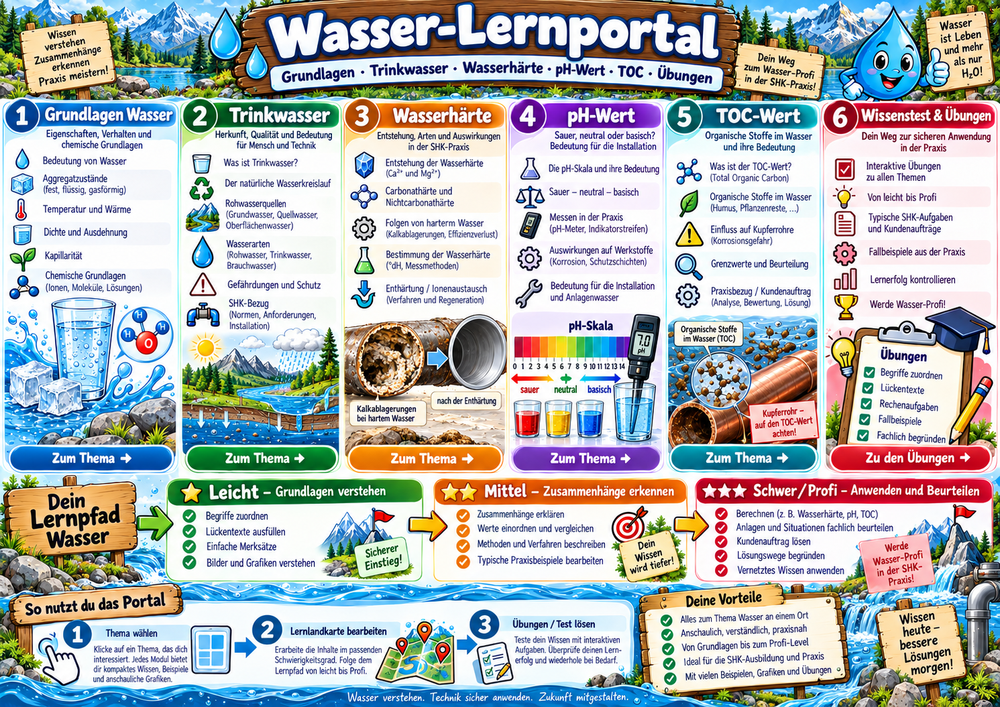

💧 Eigenschaften & Kreislauf
Aggregatzustände, Temperatur, Wärme, Dichte, Kapillarität, chemische Grundlagen.

Wähle ein Thema und arbeite dich von Leicht über Mittel bis Schwer/Profi vor.
Aggregatzustände, Temperatur, Wärme, Dichte, Kapillarität, chemische Grundlagen.
Wasserkreislauf, Rohwasserquellen, Wasserarten, Schutz, SHK-Bezug.
Ca²⁺/Mg²⁺, Härtearten, Folgen, Bestimmung, Ionenaustausch und Berechnungen.
pH-Skala, Messung, Einordnung und Bedeutung für Werkstoffe und Installation.
TOC verstehen, Wasseranalyse lesen und Relevanz für Kupferrohre beurteilen.
Multiple Choice, Zuordnung, Rechnen und kleine Fallbeispiele aus der SHK-Praxis.